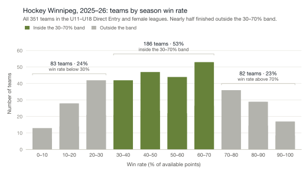

Youth hockey series · Paper 1 of 3
When Competition Fails Players
What Happens When Games Stop Being Fun and Stop Challenging Players
The Season Everyone Recognizes
Hockey, at its best, is fun. Kids skate harder when the game is close. They replay shifts on the drive home. They want to come back to practice. Coaches see something work and build on it. Parents lean forward in the stands.
That is the season everyone signs up for.
But every year, in association after association, a different version takes hold. It usually becomes clear within the first few weeks.
Certain games feel decided before the puck drops. Some matchups stretch deep into the third period with every shift contested. Others are effectively settled by the second. Parents start to know which opponents will provide a test and which will not.
On some teams, players have time and space on nearly every shift. Breakouts succeed easily. Wins accumulate, but urgency does not. Over time, players build habits that succeed in these games but are rarely forced to evolve.
On other teams, the experience is reversed. The puck spends long stretches in the defensive zone. A single mistake quickly turns into a goal against. Players work hard but rarely control play. Weeks pass without a close game.
In both cases, the season unfolds as scheduled. Practices are held. Tournaments are played. Standings gradually separate. From the outside, everything appears normal. Within the experience, something feels off.
A coach often feels it first. The room is quiet after a 7–0 win and quieter after a 7–0 loss. Players who started the year sharp are coasting. Players who started confident are hesitating. The coach raises it with the bench, the board, the parent group. There is no clear path to fix it. The schedule is the schedule. The division is the division.
Parents feel it next. They see it in body language on the bench. In how their child talks about the game on the drive home. Or, more often, doesn't. Practices that started with energy begin to feel repetitive. By midseason, frustrated emails are circulating: about ice time, about line combinations, about whether the team is in the right tier at all. The emails are usually about something specific. The frustration underneath rarely is.
What is missing is harder to put into a sentence. The games aren't fun. Not the lopsided wins, not the lopsided losses, not the practices that follow either. Players are still on the ice, but the part that draws them to the rink has gone quiet, and no one can quite say why.
A team that wins 8–1 learns something different than a team that wins 3–2. A team that loses 9–0 experiences something different than a team that loses 4–3 in overtime. Across a season, those differences can accumulate: in skill, in confidence, in whether a player wants to come back next year.
When the same kind of season repeats across tiers and organizations, the issue is not isolated to one team or one decision. It points to something structural in how competition is formed.
When the Standings Separate
The experience above is familiar to most hockey families. What is less familiar is how clearly it shows up when you look at an entire league. Winnipeg is the example here because its standings are public and close to home.
Figure 1 shows the distribution of team win rates across the 2025–26 Hockey Winnipeg season: all 351 teams in the U11 to U18 Direct Entry (A) and female leagues. Each bar represents the number of teams that finished within a specific win-rate range. Win rate here means points earned as a share of the points available, so a tie counts as half a win.

Swipe to see the full chart →
Some teams win more. Some win less. That is expected.
But look more closely.
A substantial share of teams fall outside the middle, with high win rates on one side and low win rates on the other. The middle holds only about half of the teams.
In practice, many teams spend the season clearly stronger or clearly weaker than most of their opponents.
To put that into hockey terms:
- Teams above a 70% win rate spend most of the schedule as the stronger side.
- Teams below a 30% win rate spend most of it chasing the game.
- When nearly half of teams fall outside the 30 to 70 percent reference band, as 165 of 351 did last season, fun, meaningful games become less frequent for everyone involved.
Win rate is only part of it. Teams at the extremes also played games decided by wider margins, and far more of their games were blowouts. The third paper in this series returns to those measures.
The 30 to 70 percent band is not an arbitrary line. It is where nearly every NHL team lands over a full season. Over the past several NHL seasons, only a handful of teams have had records outside this range. Youth hockey is not the NHL, and the band is not a standard to be judged against. It is simply a common reference point that any league can use to see how its own competition compares.
Short youth schedules do spread results more than an 82-game NHL season would. But chance alone does not explain the gap. If every game were a coin flip between evenly matched teams, played over each team's actual schedule, luck would put roughly 8 percent of teams outside the band. Last season, 47 percent were.
This is not about perfect parity. Youth hockey should not mirror professional leagues. Differences in maturity, size, and skill are natural. But there is a big difference between almost no teams outside the 30 to 70 percent band and nearly half of them outside it.
The result is not one or two lopsided games. It is entire seasons shaped by predictable outcomes. Standings separate early. Playoff seeds become obvious. Competitive tension narrows to a small group of teams while others play out the schedule.
For players on dominant teams, the challenge is limited. For players on struggling teams, confidence erodes. In both cases, the season delivers fewer of the moments players actually love: the close shift, the tied third period, the mistake that matters, the goal that earns a celebration on the bench.
The data does not suggest anyone is failing. It suggests competition is not forming as tightly as it could. And when this pattern repeats across associations and age groups, it raises a harder question.
If the imbalance is measurable and persistent, why does it keep happening?
Why It Keeps Happening
If lopsided seasons were rare, they could be written off as a strong age group here and a weak one there. They are not rare.
Go back four seasons, to 2021–22, and Hockey Winnipeg looks almost exactly the same: 48 percent of teams finished outside the band. Look beyond Winnipeg and the story holds. Last season, it was 49 percent of teams in the Greater Toronto Hockey League, and 52 percent in Hockey Regina.
Different years, different cities, the same result. That is not bad luck. It points to something built into how seasons are set up.
The standings show the pattern. On their own, they do not show what causes it. Two likely contributors sit earlier in the season than most people realize: how players are evaluated, and how leagues are structured. The second paper in this series examines both closely. The short version follows.
Before a single regular-season game is played, teams must be formed and divisions set. Those decisions rely on evaluation windows that are short and compressed. Players are observed over a limited number of sessions. Evaluators compare them against whoever happens to be on the ice at that moment.
Even careful evaluators differ in what they notice and what they value. Hockey judgment is human. One evaluator prioritizes puck skills. Another focuses on skating. A third values positional awareness or effort. Even when everyone is acting in good faith, interpretations vary.
When those judgments combine across an entire age group, even small differences in judgment can compound. A few players are placed slightly too high, a few slightly too low, and one team ends up a little stronger than expected.
None of these decisions, on their own, look dramatic. Scaled across multiple teams and divisions, the competitive structure becomes less precise than it appears.
League design adds another layer. Divisions and tier counts are often set before the true distribution of players is fully understood. Associations may assume this year will resemble last year. Enrollment numbers guide structure. Historical patterns shape expectations. But each year's group of players is different. Some years are top-heavy, some evenly distributed, some have natural gaps in the middle. When fixed structures meet shifting talent distribution, mismatch becomes more likely.
Picture it in practice. An association has enough players for three teams, and the league's structure gives it one team in each tier: A, B and C. But this year's age group is strong. September evaluations show enough players for two teams that could hold their own in Tier A, and very few who belong in Tier C. The structure still has room for only one Tier A team. So the second strong team plays in Tier B, where it wins nearly every game, and the Tier B teams it faces spend the winter losing. Everyone in the rink can see it by November.
Once the season begins, flexibility narrows. Schedules are published. Ice is allocated. Movement becomes disruptive. Even when an imbalance is obvious, correcting it midseason is hard. Some leagues do allow it. Hockey Winnipeg, for example, allows teams to be moved up or down levels at the end of the first half of the schedule. The picture in Figure 1 is what remained after that option was available.
This is why the same conversations return each year. Placement debates resurface. Requests for team movement circulate. Coaches raise issues without a clear path to fix them. Parent emails build quietly.
The imbalance is not a question of effort. It is shaped by how information is gathered, interpreted, and applied at scale. Understanding that does not assign blame. It clarifies the constraint.
And once the constraint is clear, the conversation can shift from reacting to imbalance toward designing competition more intentionally.
What Would Make Seasons Better
If imbalance is not random, then better seasons are not random either.
More competitive hockey does not require perfect parity. It requires tighter alignment: forming teams and leagues in a way that produces more games where the outcome is uncertain and effort matters on both sides.
That begins with a clearer understanding of where players actually are. Short evaluation windows will always exist. Human judgment will always play a role. But when placement decisions are informed by more consistent signals, small differences are less likely to compound into large gaps.
Leagues also need flexibility. Age groups change from year to year. Structures that assume every season will resemble the last are more likely to miss the mark. When league structure can adapt to the true shape of an age group, competitive gaps can narrow.
Tighter alignment has practical effects. More games are decided late. More shifts matter. More players experience pressure that sharpens rather than overwhelms.
Coaches can teach within a competitive range that makes sense. Players measure themselves against opponents who push them without burying them. Parents notice the difference quickly. Seasons feel purposeful. Improvement feels connected to competition rather than separate from it. Drive-home conversations shift from frustration to reflection, and sometimes to the replay of a shift that worked.
None of this eliminates variability. Some teams will still be stronger, some weaker. But the range tightens. The extremes shrink. The number of meaningful games, the kind players actually want to play, increases.
That is the goal.
When competition forms more precisely, more players stay engaged. More players improve. More players want to come back next year. And more seasons feel worth the investment of time, money, and energy that families commit.
Youth hockey has never lacked effort. What it has lacked is a consistently reliable way to ensure that competition, and the fun that comes with it, forms as tightly as it could.
When that changes, the experience changes with it.
Want Part 2 when it’s released?
Sources and method
Standings: Hockey Winnipeg published standings, 2025–26 season, all 351 teams in the U11 to U18 Direct Entry (A) and female A leagues: 275 Direct Entry teams, 128 outside the band, and 76 female teams, 37 outside the band. Win rate is points earned as a share of points available, so a tie counts as half a win. No team finished exactly on 30 or 70 percent.
Chance comparison: each game treated as a coin flip between evenly matched teams, ties ignored, over each team's actual number of games (most played 18 to 22). The expected share outside the 30 to 70 percent band is 8.4 percent. For a single 19-game schedule it would be 6.4 percent; the difference comes from how 30 and 70 percent fall between whole numbers of wins.
Earlier season: Hockey Winnipeg standings, 2021–22 season, all 299 teams in the U11 to U18 Direct Entry (A) and female A divisions, excluding AA divisions to match 2025–26. Win rate calculated the same way: 144 of 299 teams outside the band.
Other leagues, 2025–26, from game results collected from each league's public schedule, win rate calculated the same way, all divisions: Greater Toronto Hockey League, U10 to U18, A to AAA, 228 of 470 teams outside the band; Hockey Regina, U11 to U18, teams with at least ten games, 71 of 136.
NHL comparison: regular-season standings, points percentage, over recent seasons.
Team movement: Hockey Winnipeg Rule Book 2026–27, rules 17(e), 18(e) and 19(h).
© 2026 Max Analytics · maxanalytics.ca · Figure 1 data: Hockey Winnipeg published standings, 2025–26 season, Direct Entry and female leagues.